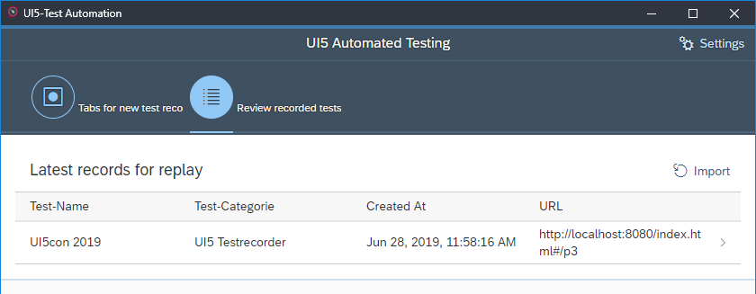
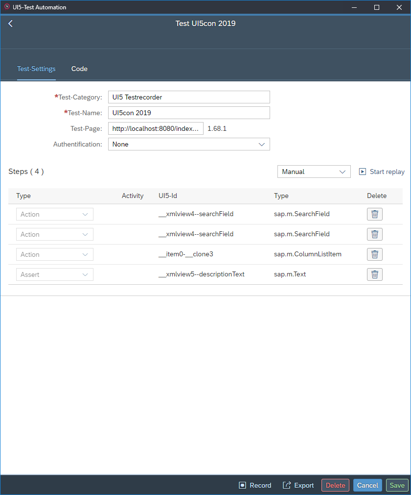

UI5 Test Recorder – Review recorded tests
To review a recorded test, just select a saved test from the list at the tab Review recorded tests.

The test-detail page
The test-settings tab
The first part of the test-details page is the tab Test Settings showing you some general information on the selected test:
- the test category,
- the test name,
- the test page, which contains the URL of the application page, and
- the UI5 version of the application page.
At the center of the page, you can find a list of all test steps that have been recorded.
You can replay these steps by clicking the button Start replay in the table toolbar.
The interval between subsequent test steps can be selected
using the dropdown menu to the left of the replay button:
- Manual: Each test step has to be executed manually by using corresponding buttons.
- Slow: The replay executes automatically, with 2 seconds among test steps.
- Medium: The replay executes automatically, with 1 seconds among test steps.
- Fast: The replay executes automatically, with 0.5 seconds among test steps.
In the footer at the bottom of the page, you find some buttons, for example, to save the test, to (re-)start recording, and to export the test.

The code tab
This part of the documentation is still under construction.